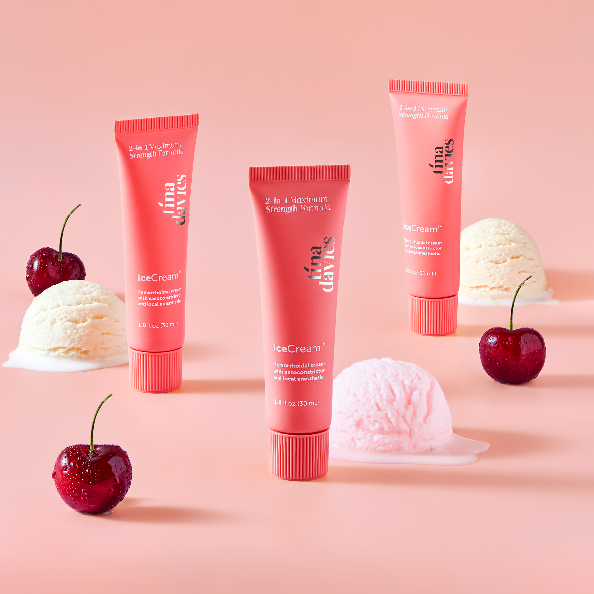
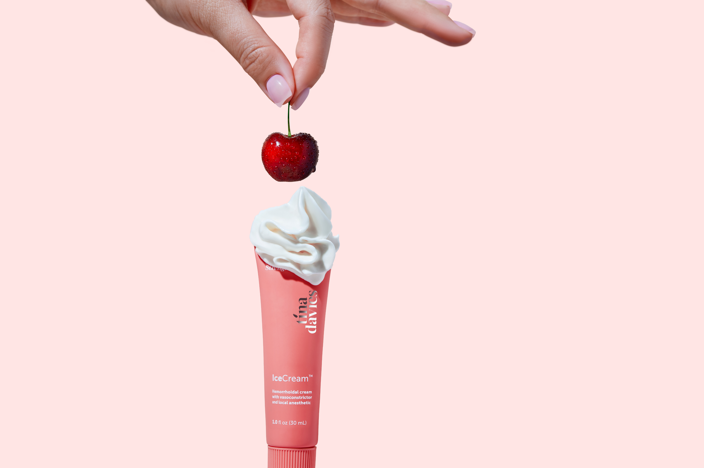
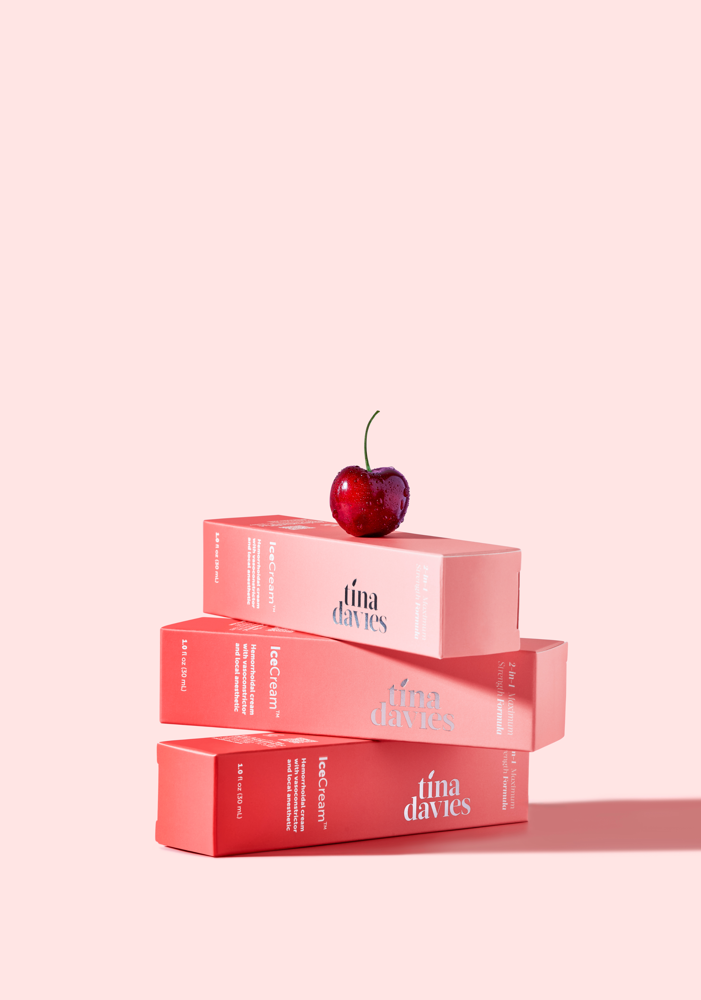
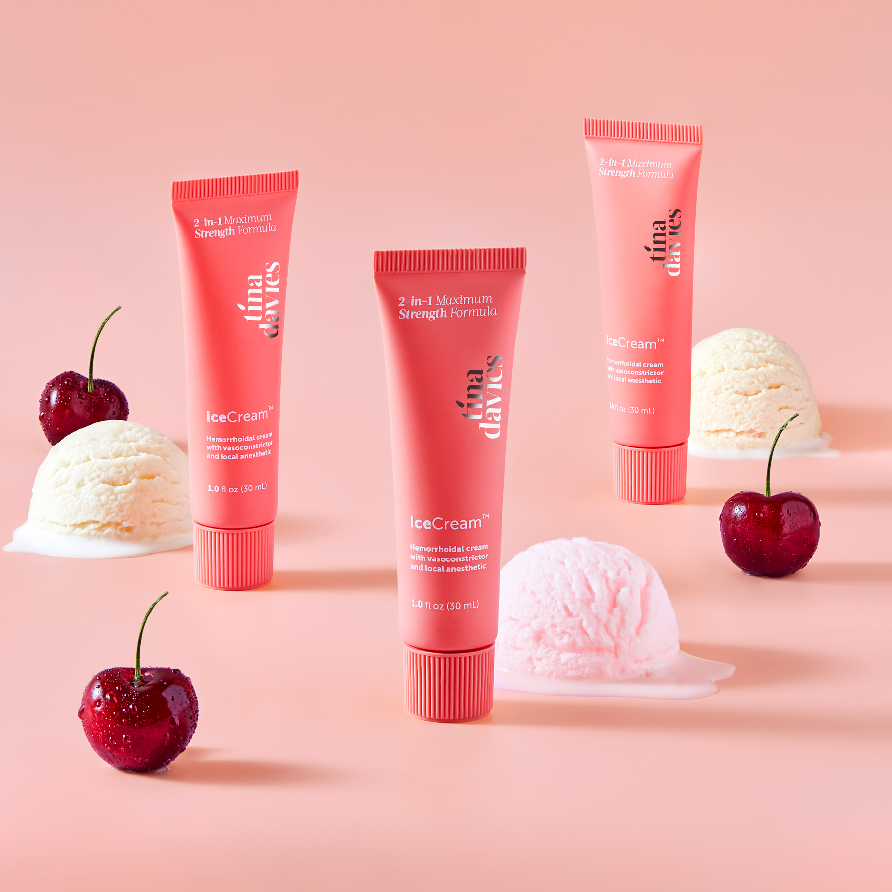
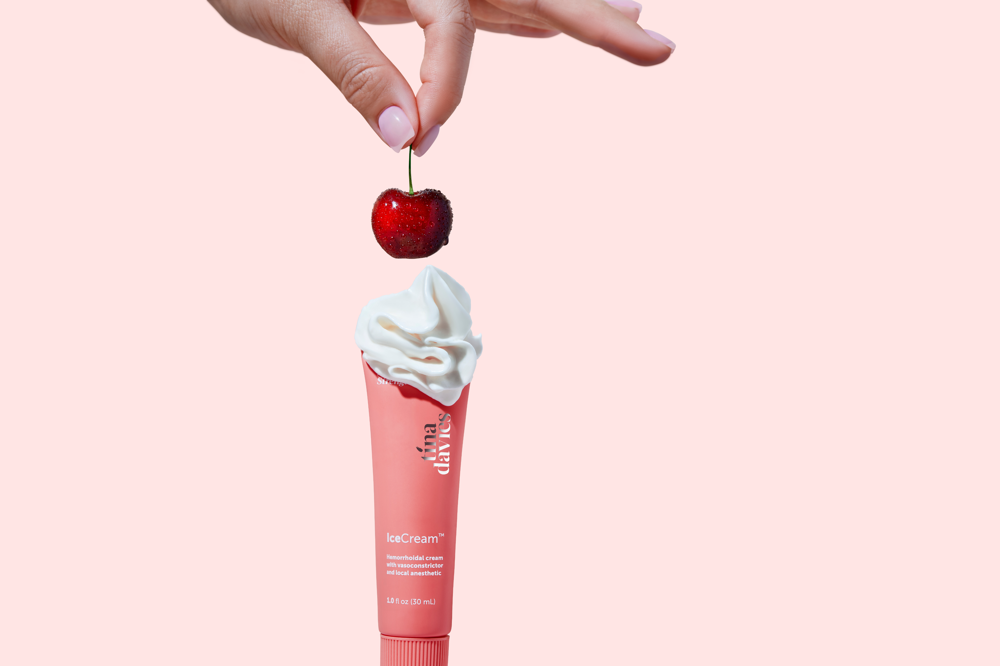
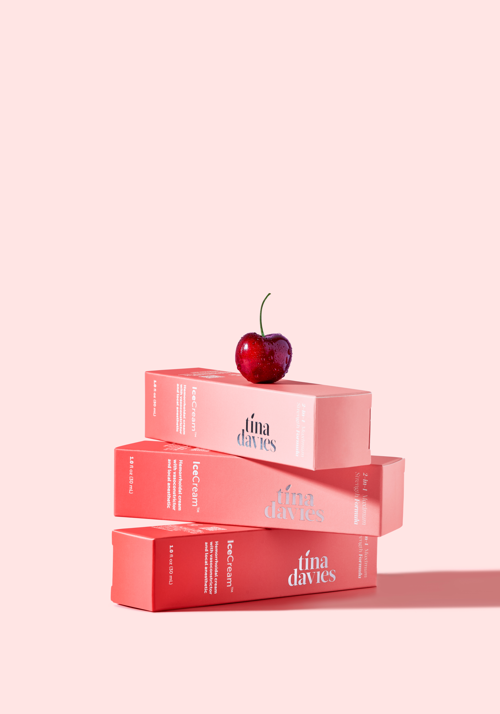
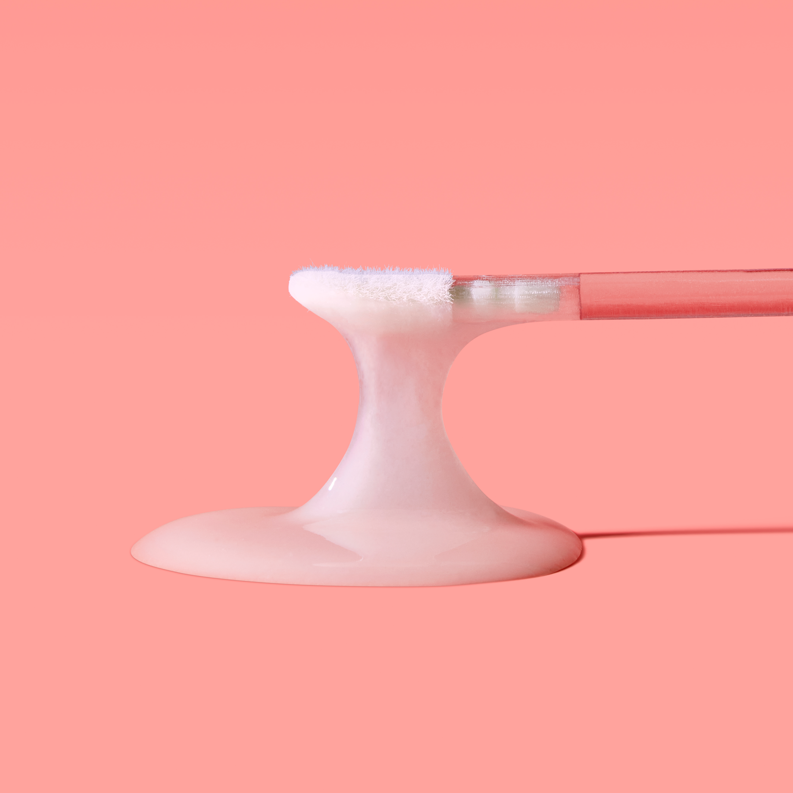
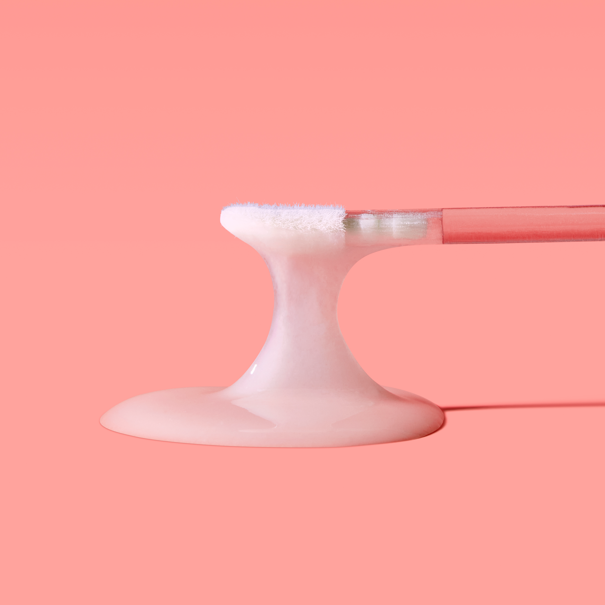

IceCream Numbing Cream by Tina Davies - 2024
Packaging and Digital Visuals Specialist
MORE INFO –
Managed comprehensive packaging design and crafted engaging visual content for a product launch, delivering dynamic and static assets for social media and web platforms.
CREDITS –
Tina Davies Professional
Creative Director: Aisling Kelly
 






Website Banners and Product
Display Page (PDP) Imagery
for Tina Davies Professional
 
